Inicializando sistema...
Uma investigação sobre computação de alto desempenho, inteligência artificial, processamento paralelo e arquitetura computacional aplicada às máquinas que definem os limites da capacidade humana de processar informação.
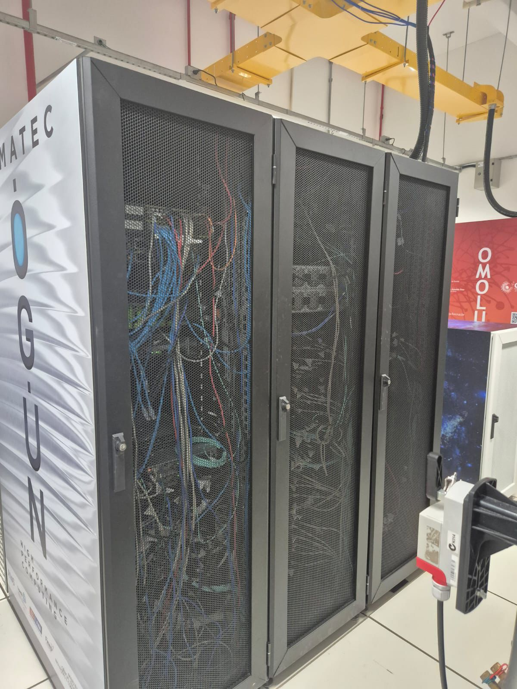
Desde 1993, o TOP500 cataloga os supercomputadores mais poderosos do mundo, medidos em operações de ponto flutuante por segundo (FLOPS) através do benchmark Linpack.
O TOP500 é publicado duas vezes ao ano em junho (ISC High Performance) e novembro (SC Conference). Ele representa o estado da arte da computação de alto desempenho (HPC), refletindo avanços em arquitetura, energia, paralelismo e IA a cada semestre.
O critério principal é o desempenho no LINPACK, um benchmark que resolve sistemas de equações lineares densas. A unidade de medida moderna é PFLOPS (petaFLOPS = 1015 operações/segundo).
Treinamento de LLMs, redes neurais profundas, reconhecimento de padrões e modelos generativos em escala massiva.
Simulações climáticas, modelagem de proteínas, física nuclear, cosmologia e descoberta de medicamentos.
CFD, elementos finitos, dinâmica de fluidos, simulação de estruturas, aeronáutica e exploração de recursos.
Análise de petabytes de dados geológicos, sísmicos, genômicos e financeiros em tempo quasi-real.
Três máquinas distintas em origem, arquitetura e propósito, unidas pela capacidade de processar o impossível.
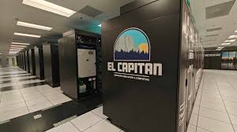
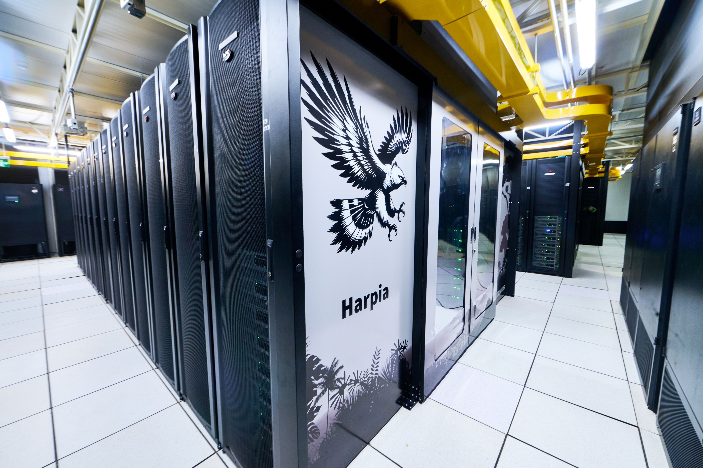
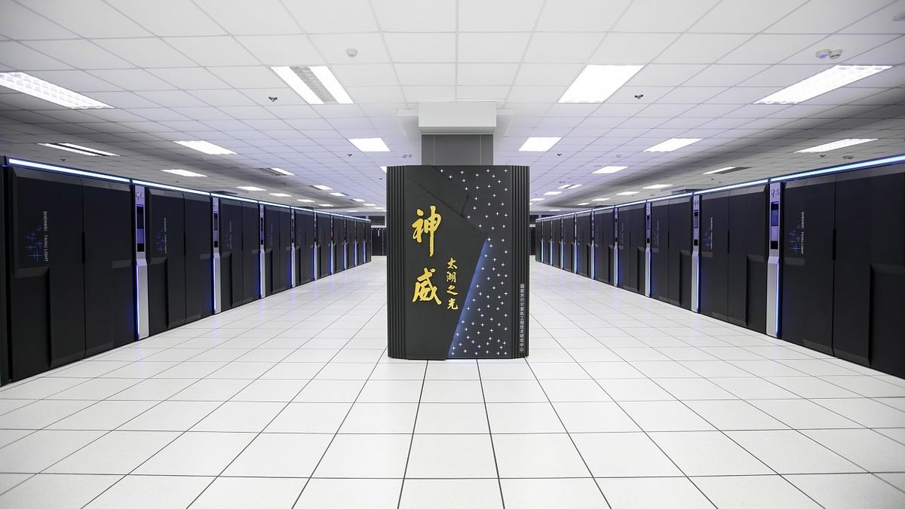
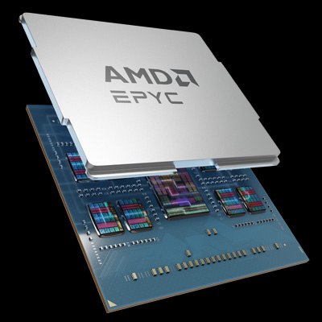
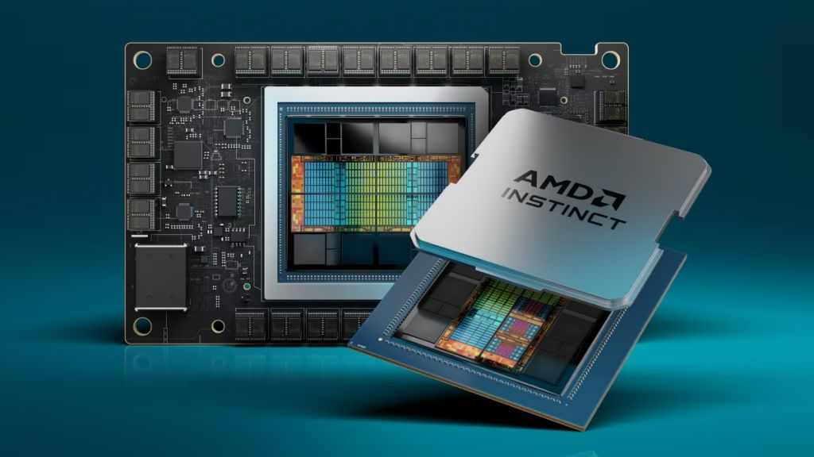
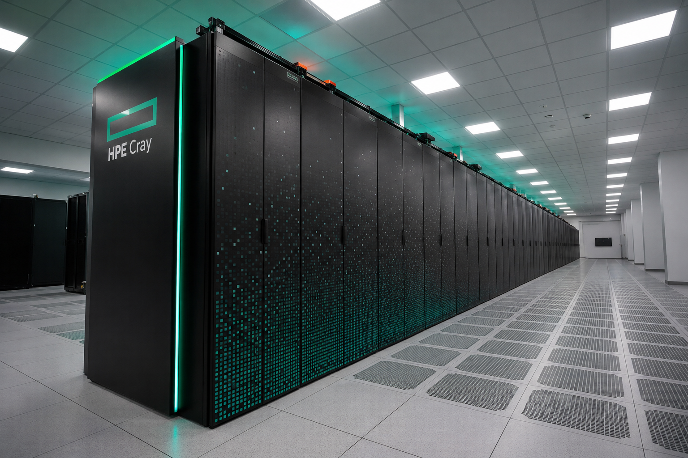
O El Capitan ocupa a primeira posição no TOP500 de novembro de 2025. Ele está instalado nos Estados Unidos, na instituição DOE/NNSA/LLNL, e foi fabricado pela HPE. O sistema utiliza a arquitetura HPE Cray EX255a, com processadores AMD 4th Gen EPYC e aceleradores AMD Instinct MI300A. Seu destaque está no desempenho exascale, com Rmax de 1.809,00 PFLOP/s e Rpeak de 2.821,10 PFLOP/s, sendo voltado para simulações científicas avançadas, inteligência artificial, ciência de dados e pesquisas estratégicas.
O MI300A unifica CPU, GPU e memória HBM3e no mesmo chip. Isso elimina a latência de transferência de dados entre processador e acelerador, o que é crítico para workloads de IA.
O Harpia ocupa a posição 36 no TOP500 de novembro de 2025. Ele está localizado no Brasil, na Petróleo Brasileiro S.A, e foi desenvolvido pela Lenovo. O sistema utiliza a arquitetura ThinkSystem SR675 V3, com processadores AMD EPYC 9354 e GPUs NVIDIA H100 SXM5. Seu desempenho real medido é de 56,60 PFLOP/s, enquanto seu pico teórico é de 120,38 PFLOP/s. O Harpia tem aplicação direta na indústria brasileira, principalmente em simulações sísmicas, modelagem geológica, análise de dados e exploração de petróleo e gás.
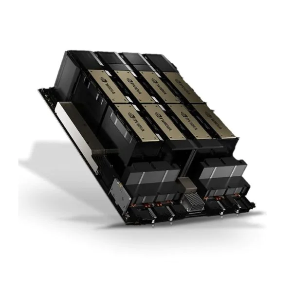
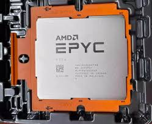
O Harpia processa dados sísmicos 3D/4D para identificar reservatórios de petróleo no pré-sal, reduzindo riscos de perfuração e custos operacionais em bilhões de dólares.
Modelos de IA treinados no Harpia detectam padrões em dados geofísicos, preveem falhas de equipamentos e otimizam rotas de escoamento de produção.
O Brasil está entre os países com supercomputadores no TOP500. Isso importa para pesquisa científica, desenvolvimento industrial e capacidade própria de processamento de dados em larga escala.
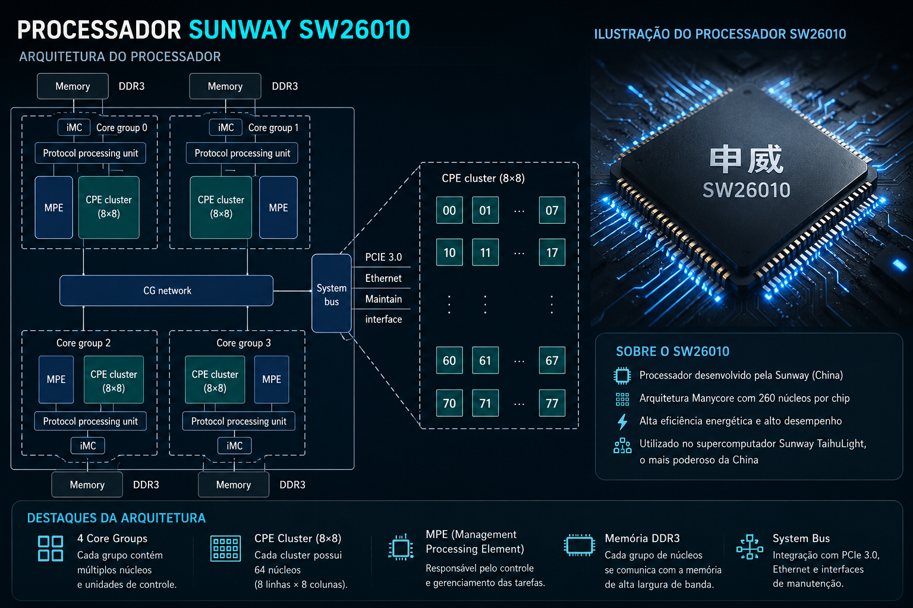
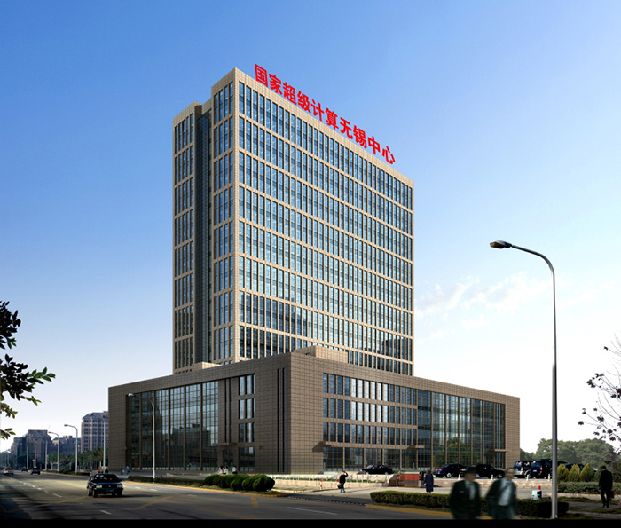
O Sunway TaihuLight ocupa a posição 24 no TOP500 de novembro de 2025. Ele está localizado na China, no National Supercomputing Center in Wuxi, e foi desenvolvido pela NRCPC. Seu principal diferencial é o uso da arquitetura Sunway MPP, baseada no processador Sunway SW26010, sem depender de GPUs tradicionais. O sistema possui 10.649.600 núcleos e alcança Rmax de 93,01 PFLOP/s, com Rpeak de 125,44 PFLOP/s. Ele representa uma abordagem própria da China para computação paralela em larga escala.
A arquitetura manycore do SW26010 coloca todos os núcleos no mesmo chip com memória de rascunho local. Isso elimina o tráfego de cache entre chips, sendo uma abordagem diferente das arquiteturas x86 ocidentais.
Três arquiteturas distintas, três filosofias de engenharia, um objetivo comum: alcançar o máximo desempenho computacional.
Fonte: TOP500, lista de novembro de 2025. Valores Rmax medidos pelo benchmark HPL/Linpack. Rpeak teórico: El Capitan 2.821,10 / Sunway 125,44 / Harpia 120,38 PFLOP/s.
| Critério | El Capitan | Harpia | Sunway TaihuLight |
|---|---|---|---|
| Ranking TOP500 | #1 | #36 | #24 |
| País / Ano | 🇺🇸 EUA / 2024 | 🇧🇷 Brasil / 2025 | 🇨🇳 China / 2016 |
| Fabricante | HPE | Lenovo | NRCPC |
| CPU | AMD 4th Gen EPYC 24C 1.8GHz | AMD EPYC 9354 32C 3.25GHz | Sunway SW26010 260C 1.45GHz |
| Acelerador | AMD MI300A (APU) | NVIDIA H100 SXM5 80GB | Manycore nativo |
| Núcleos Totais | 11.340.096 | 284.160 | 10.649.600 |
| Rmax (medido) | 1.809,00 PFLOP/s | 56,60 PFLOP/s | 93,01 PFLOP/s |
| Rpeak (teórico) | 2.821,10 PFLOP/s | 120,38 PFLOP/s | 125,44 PFLOP/s |
| Nmax ? NmaxTamanho máximo do problema usado no benchmark Linpack. Indica quantas equações lineares o sistema resolve de uma vez. | 24.768.000 | 3.993.600 | 12.288.000 |
| HPCG ? HPCGBenchmark que mede desempenho em cargas mais próximas de aplicações científicas reais, considerando memória e comunicação entre componentes. | 17.406,0 TFLOP/s | Não informado | 480,848 TFLOP/s |
| Sistema Operacional | TOSS | RedHat 8.10 | Sunway RaiseOS |
| Consumo | 29.684,62 kW | 1.840,00 kW ★ | 15.371,00 kW |
| Efic. Energét. (Rmax/kW) | 60,9 ★ | 30,8 | 6,1 |
| Foco Principal | IA + Seg. Nacional | Óleo e Gás | Clima + Ciência |
| Tecnologia Própria | ✗ AMD/HPE | ✗ AMD/NVIDIA | ✓ 100% Chinesa |
Fonte: TOP500, lista de novembro de 2025. Rmax = benchmark HPL/Linpack medido oficialmente. ★ Melhor na categoria.
★ El Capitan é o mais eficiente quando medido pelo Rmax real (60,9 PFLOP/s por kW). Com Rpeak/kW, o Harpia aparecia como mais eficiente (65,4), mas usando o Rmax correto fica 30,8 PFLOP/s por kW.
Em supercomputação, Rmax e Rpeak não significam a mesma coisa. O Rmax mostra o desempenho real medido no teste Linpack. O Rpeak mostra o pico teórico calculado a partir dos componentes. Por isso, na comparação prática entre supercomputadores, o Rmax é o valor mais importante.
É o resultado real do benchmark HPL (High Performance Linpack). O supercomputador resolve um sistema denso de equações lineares e o tempo medido determina os PFLOPS reais. É o número oficial que define a posição no TOP500.
É o máximo absoluto calculado matematicamente: frequência × núcleos × operações por clock. Nunca é atingido na prática. Existem overhead de comunicação, acesso à memória, sincronização e outras perdas inevitáveis.
Selecione uma tarefa e observe como um supercomputador distribui o processamento entre milhares de núcleos em tempo real.
◦ Sistema pronto. Selecione uma tarefa para iniciar a simulação.
A supercomputação é a síntese de todas as áreas da Engenharia de Computação aplicadas no limite do que é fisicamente possível.
Pipeline de execução, hierarquia de memória, NUMA, SIMD, throughput vs latência: todos os conceitos se amplificam em escala de exaFLOPs.
ILP, TLP, DLP e paralelismo de dados em escala de milhões de threads simultâneas. MPI, OpenMP e CUDA definem como o código é distribuído.
Interconexão de nós com latências abaixo de 1µs e largura de banda acima de 400 Gb/s. InfiniBand e Slingshot definem o backbone.
Supercomputadores são a infraestrutura que torna possível LLMs com trilhões de parâmetros, modelos de difusão e IA generativa em escala.
Análise de petabytes requer pipelines de I/O paralelo, sistemas de arquivos distribuídos como Lustre e GPFS com centenas de GB/s de throughput.
Green500 mede GFLOPS/W. Refrigeração líquida, chips 3D e DSE são determinantes para viabilidade econômica e ambiental dos sistemas.
Após a visita ao Centro de Supercomputação, foi possível compreender melhor como a computação de alto desempenho depende da integração entre hardware, software, energia, refrigeração e processamento paralelo."
Ver fisicamente os racks de servidores permitiu compreender a dimensão real da infraestrutura necessária. Não são computadores individuais, mas organismos computacionais integrados.
A refrigeração é tão crítica quanto o processamento. Sistemas de imersão dielétrica, water cooling e controle ambiental precisam de engenharia sofisticada para operar 24/7.
Dezenas de megawatts de energia, sistemas de UPS, geradores de backup e redundância elétrica tripla garantem que nunca haja interrupção nos cálculos críticos em andamento.
Job schedulers (Slurm, PBS), sistemas de monitoramento e orquestração de workloads transformam o hardware em uma plataforma produtiva para centenas de pesquisadores simultâneos.
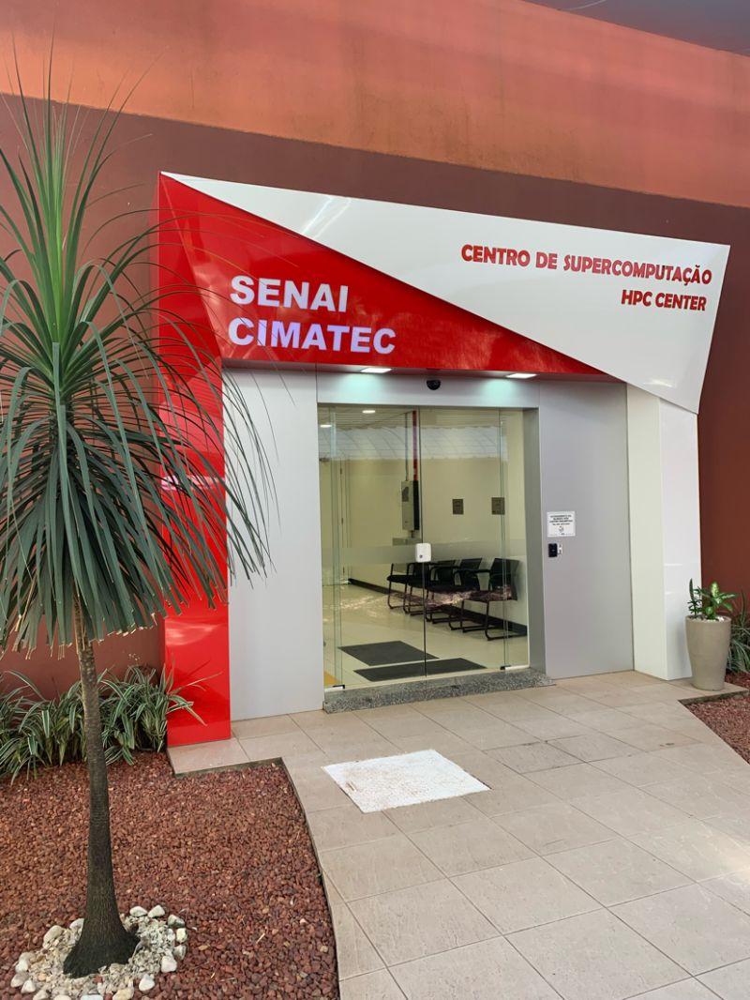